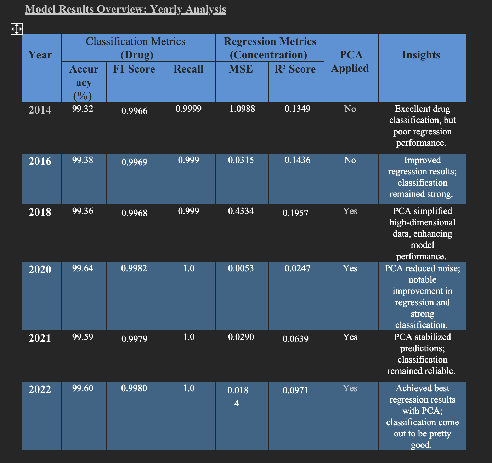

Multi output K-Nearest Neighbours(KNN)
Models implemented : KNN , KNN+PCA and for 6 years dataset considering pre and post covid
What is KNN?
The K-Nearest Neighbors (KNN) model is a straightforward and highly versatile machine learning algorithm used for both classification and regression tasks. Unlike many other models, KNN is an instance-based or "lazy" learning algorithm, meaning it does not involve a training phase where the model generalizes from data. Instead, KNN stores the entire training dataset and makes predictions at the time of query by comparing the input to the stored data points.
KNN predicts outcomes based on the proximity of data points, calculated using a distance metric such as Euclidean or Manhattan distance. For a given input, the algorithm identifies the K closest data points (neighbors) in the feature space. In classification tasks, KNN predicts the class by majority voting among the neighbors' classes, while in regression tasks, it predicts the target value by averaging the target values of the neighbors. This simplicity makes KNN easy to implement and intuitive to understand, even for beginners in machine learning.
While KNN offers several advantages, such as being non-parametric (it makes no assumptions about the underlying data distribution) and versatile enough for various tasks, it also has limitations. The algorithm can be computationally expensive, especially for large datasets, since it must calculate distances for every query. Additionally, KNN is sensitive to irrelevant features and requires proper scaling of input features to perform well. It also suffers from the "curse of dimensionality," where performance degrades as the number of features increases.
KNN regression is particularly useful for problems where the relationship between features and the target is non-linear, and interpretability is less critical. However, it is best suited for small to medium-sized datasets where the computational cost of distance calculations is manageable. By carefully selecting the number of neighbors (K) and preprocessing the data through feature scaling or selection, KNN can be an effective and practical model for many use cases.
Dataset Preparation:
The dataset foreach year was imported from a cleaned-up CSV file (meps_clean_.csv). We have some new addition in the data sets hence it needed preprocessing and the following steps was performed:
attributes having significant missing values of predictors or target variables were excluded.
Predictor variables (X) were defined by features like income, insurance coverage, and demographics, while target variables were drug names and their associated concentrations (y).
Feature Engineering
- Categorical features such as Sex and Ethnicity were encoded into numerical using LabelEncoder for model’s compatibility.
- StandardScaler was employed to standardize the numerical features as needed, as distance based algorithms like KNN are sensitive to scale.
- The target variable which is Drug was also encoded consistently, allowing a crystal clear understanding of the content and ensuring infinite or invalid entries were carefully tackled.
Train Test Split
To evaluate the residual noise in the model, a practice of 80-20 ratio of the datasets was adopted in favor of the training datasets. This provided assurance that the model would have good accuracy on new data.
Dimensionality Reduction with PCAConsidering the characteristics of the dataset, which is high dimensional, Principal Component Analysis (PCA) was performed to limit the dimensionality feature space to only two while preserving the most significant variance. It helped to save computation costs without loss of predictive strength.
Note: The reduction was done only on the datasets which showed high-dimentional data i.e. from 2018 through 2020.
Model Architecture
The architecture developed was aimed at predicting the drug classes and concentration levels as well:
Tasks of predicting in parallel drug classes and concentration levels were performed using KNeighborsRegressor applied along with a MultiOutputRegressor.
The n_neighbors hyperparameter was found to range from 5-9 overall after tuning due to the bias-variance tradeoff.
Model Training and Prediction
The training dataset, which underwent PCA, was used to train the model.
Predictions for the test dataset were performed for both the Drug and Concentration in order to allow a complete assessment.
Evaluation Metrics
For Regression ('Concentration'):,br>
Mean Squared Error (MSE): Showed that the prediction errors relatively varied year to year while it mostly on the lower side.
R² Score: Reflects a degree of explaining the prediction variance achieved.
For Classification ('Drug'):
Precision:Overall indicated a good level of accuracy in predicting the issued 'Drug' classes.
F1 Score:Demonstrating the balanced precision and recall of the model.
Recall:This value was almost converging to 1 and showed that there were no false negatives concerning the issued drug class.
A Confusion Matrix was employed to evaluate the classification performance and displayed very few instances of incorrect classifications.
Results and Insights
The predictions for drug names were accurate to a significant degree which also ensured the trustworthiness of the classification task.
The regression results revealed some potential for enhancement since the R² score evidenced some insufficiency in accounting for variation in the concentration levels.
Compressed sensing through PCA was very important in ensuring performance was not sacrificed in the pursuit of lowering the cost of computing resources.
Additional Analysis: The correlation matrix showed a better understanding of the dependencies among features and targets presented in the form of heatmaps.
A comparison between the actual and predicted values was prepared in detail and stored as a CSV file.
Model Results Overview
2014
The model managed to classify drugs quite successfully in the year 2014 since it recorded an accuracy of 99.32%, while its F1 score was 0.9966, signifying that correct drug labels were consistently produced almost all of the times. When measuring concentration levels, the relevant MSE was 1.0988, whereas the R² score was 0.1349 – poor performing results.
There was no need for PCA this year because the model was able to manage the features without running into dimensionality problems.
2016
The 2016 results were a bit better than the previous years with regard to the regression as the MSE beat its previous figure at 0.0315 while the R² score similarly improved to 0.1436, which suggests that concentration levels were predicted better. Classification metrics have also remained among the strong suit with a 99.38% accuracy and an F1 score of 0.9969.
Just like 2014, there was no need for the model fitting procedures since dataset structure favored KNN.
2018
In 2018, the situation appears to change where the model raised the difficulty levels in it's regression task with an MSE of 0.4334 and R² score of 0.1957 indicating that the variance in concentration levels were not captured widely. But drug classification did not change for the worse because 99.36% drug classification accuracy and F1 score 0.9968 were realized.
In this year, PCA had to be employed in the capacity of simplifying the complexity of the dataset and it worked well toward reducing number of features and allowing better predictions.
2020
In 2020, regression results witnessed a notable enhancement with the MSE declining to 0.0053 although the R² score still remained poor at 0.0247. Metrics of classification outdid the expectations with accuracy being 99.64% and F1 score being 0.9982.
This year had a high-dimensional data and caused high noise, however, PCA gave better estimates for both tasks.
2021
The results of the year 2021 also illustrated stability and reliability in classification with accuracy standing at 99.59% and F1 score being 0.9979. Slight improving trends were noted in regression data as well in regards to classification of 2020 results, MSE was high standing at 0.0290 and R² score at 0.0639.
PCA was again used with positive results when selecting the amounts of dimensions of the data and the achieved performance level of the model.
2022
By 2022, the model got one of its best results ever for regression tasks, with an MSE of 0.0184 and an R² score of 0.0971, thus the model exhibited remarkable capabilities of transforming concentrations. Classificatory tasks saw no downfall and retained their quality with the model achieving 99.60% accuracy, F1 score = 0.9980.
Employed PCA, and that made the time complexity reduce a lot and also the accuracy of predictions came out to be pretty good.
Summary
Classification Stability: The model was oriented in the correct direction for drug classification and was consistently surpassing 99% accuracy and F1 scores for drug classification throughout the years. This hust speaks for reliability in the identification of drugs in practice.
PCA's Impact: PCA was able to remove lots of feature noise for years the first years so as to increase the level of prediction especially for regression on 2018, 2020, 2021, and 2022.
Regression Variability: The regression portion however, did not perform well as the classification part, results only improved for certain years. On the upside, there was a context focus on regression complexities, and the consistent improvement shown by metrics such as MSE and R² scores in 2022 is a good indication.

Access to the Model Implementation: KNN-Model
Logistic Regression is a fundamental and widely used machine learning algorithm primarily applied to binary and multiclass classification tasks. Despite its name, logistic regression is a classification algorithm, not a regression technique. It predicts the probability of an outcome belonging to a particular category, making it particularly suited for problems where the target variable is categorical.
At its core, logistic regression models the relationship between the independent variables (features) and the dependent variable (target) using the logistic (sigmoid) function. The sigmoid function maps the input to a value between 0 and 1, which represents the probability of the target belonging to a specific class. For binary classification, a threshold (typically 0.5) is applied to classify the output into one of the two possible categories.
Logistic regression offers several advantages, including simplicity, interpretability, and computational efficiency. It assumes a linear relationship between the features and the log-odds of the target variable, which makes it easy to understand and explain. Additionally, logistic regression is computationally lightweight, making it suitable for large datasets and real-time applications.
However, logistic regression has limitations. It relies on the assumption that the relationship between the features and the log-odds is linear, which may not hold in more complex problems. Additionally, it is sensitive to multicollinearity (high correlation between features) and irrelevant features, requiring proper feature engineering and regularization techniques to avoid overfitting or poor performance.
Logistic regression is widely used in applications such as fraud detection, medical diagnosis, and customer churn prediction. It serves as a baseline model for classification problems, providing a balance between simplicity and predictive power. Despite its limitations, logistic regression remains a powerful and practical tool in the data scientist's toolkit.
The logistic regression model was developed to classify the categorical target variable Drug based on input features including Age, Sex, Ethnicity, Race, and various socioeconomic indicators like Personal_income and Family_income. To prepare the data, the target variable was encoded as categorical integers, and missing or infinite values were handled by replacing them with NaN and dropping incomplete rows. The data was standardized using StandardScaler to ensure consistency across features, and the dataset was split into 80% training and 20% testing subsets using train_test_split.
The model was trained using the LogisticRegression class from scikit-learn with the lbfgs solver and class_weight='balanced' to address potential class imbalances. Training was performed with a maximum of 2000 iterations to ensure convergence. The model's performance was evaluated using a variety of metrics, including accuracy, precision, recall, and F1-score. Furthermore, the confusion matrix provided detailed insights into classification errors, highlighting areas where the model could be improved. Additionally, a classification report was generated to evaluate per-class performance, which showed variability in precision and recall for certain categories.
| Year |
MSE |
MAE |
R-Squared |
RMSE |
| 2014 |
0.0482 |
0.0626 |
0.0482 |
0.0374 |
| 2016 |
0.0123 |
0.034 |
0.0310 |
0.1107 |
| 2018 |
0.0734 |
0.1384 |
0.0734 |
0.0633 |
| 2020 |
0.0760 |
0.0937 |
0.0760 |
0.0619 |
| 2021 |
0.0639 |
0.2183 |
0.0639 |
0.0658 |
| 2022 |
0.0783 |
0.1902 |
0.0783 |
0.0734 |
The logistic regression model was evaluated for years 2014-2022 using Accuracy, Precision, Recall, and F1-Score. Performance was consistently low across all metrics:
Accuracy: Scores ranged from 0.0482 (2014) to 0.1061 (2018), indicating poor overall predictive performance.
Precision: The highest precision was 0.2183 (2021), suggesting slightly better handling of false positives that year.
Recall: Recall was the highest at 0.1061 (2018), showing limited ability to identify true positives.
F1-Score: The highest score was 0.0874 (2018), reflecting marginal balance between precision and recall.
Overall, the logistic regression model struggled to perform well across all metrics and years. Low accuracy and F1-Scores indicate limited predictive power, while the consistently low precision and recall highlight challenges in identifying true positive instances. The year 2018 showed slightly better performance across all metrics, though the improvement was marginal.
Access to the Model Implementation: Logistic Regression Implementation
The Random Forest Regressor is a robust and versatile machine learning algorithm used for regression tasks. It is an ensemble learning technique based on decision trees, where multiple decision trees are trained independently, and their outputs are aggregated (averaged) to produce the final prediction. This ensemble approach helps reduce overfitting and increases the model's accuracy and stability, making it one of the most popular algorithms for structured data.
Random Forest works by constructing multiple decision trees during training, each trained on a random subset of the data and a random subset of features (a process called feature bagging). By averaging the predictions of these diverse trees, the model achieves high generalization capability, reducing the likelihood of overfitting, which is a common issue with individual decision trees. The randomness introduced during training also makes Random Forest robust to noise and outliers in the data.
One of the significant advantages of Random Forest is its interpretability. It provides feature importance scores, which help identify the most influential features in the dataset. This makes it a valuable tool for understanding the underlying data relationships. Additionally, Random Forest is highly flexible, working well with both numerical and categorical data, and requires minimal preprocessing. It can handle missing values and data with complex, non-linear relationships effectively.
However, Random Forest has some limitations. It can be computationally expensive and memory-intensive for large datasets because it trains multiple trees. Predictions can also be slower compared to simpler models like linear regression. Additionally, while Random Forest is less prone to overfitting, it may still underperform on datasets with very high-dimensional or sparse features compared to other ensemble methods like Gradient Boosting.
Random Forest Regressor is commonly used in tasks such as house price prediction, stock market analysis, and environmental modeling, where high accuracy and robustness are required. Its balance between ease of use, predictive power, and interpretability makes it a go-to choice for many regression problems.
The multi-output random forest regressor was implemented using sklearn RandomForestRegressor. The regression was conducted using the fully integrated data for all years. Since this dataset is very large (1 million plus rows), a random sample of the data was taken of size 330,000. The features of interest were age, sex, race, ethnicity, personal and family income, PMED access, and overall and PMED insurance coverage.
The target variables were Drug and Concentration_level, both of which were label-encoded to type numeric. The train_test_split function from sklearn was used to split the data into the features and 2 target variables. The regressor was initially run using the default settings of RandomForestRegressor. This resulted in a mean squared error value of about 5369. This is fairly large, and so trial and error hyperparameter fitting was conducted to reduce the error value.
Using these hyperparameters (n_estimators=300,max_depth=20,min_samples_split=10,min_samples_leaf=4,max_features="sqrt"), the mean squared error decreased to about 5235. For the refined model, the absolute accuracy was about 16% with for Drug and 100% for Concentration_level with an absolute error threshold of 20. The percent accuracy was 26% for Drug, and 21% for Concentration_level with a percent error threshold of 15%. Clearly, there is room for refinement. A hyperparameter randomized search was attempted to improve the model more robustly using sklearn’s RandomizedSearchCV function. However, the power required for this analysis was greater than the computing power available to the authors, and the computer on which it was running crashed. A more powerful computer will be used in the future to refine this model further.
Access to the Model Implementation: Random Forest Implementation
Multi Output Linear Regression
Multi-Output Linear Regression is an extension of linear regression designed for scenarios where multiple dependent variables (targets) need to be predicted simultaneously. Unlike traditional linear regression, which predicts a single target variable based on input features, multi-output linear regression models each target as a linear function of the input features. The model simultaneously solves for multiple linear equations, one for each target, making it computationally efficient and simple to implement.
In this method, the relationship between the input features and each target is assumed to be linear. For each target, the model learns a set of coefficients (weights) and an intercept term that represent the influence of the features on that specific output. While the model predicts multiple outputs in one framework, it treats each target variable independently, meaning it does not explicitly model correlations between the targets.
Multi-output linear regression is straightforward and interpretable, making it a good choice for problems where the relationship between inputs and outputs is approximately linear. It is efficient for small to medium-sized datasets and can handle multiple outputs without requiring separate models for each target. However, its simplicity comes with limitations. The model assumes a linear relationship, which might not hold for more complex datasets. Additionally, by treating the outputs as independent, it does not leverage potential dependencies between the target variables, potentially leading to suboptimal predictions in cases where the outputs are correlated.
This technique finds applications in areas such as healthcare, where multiple health metrics like blood pressure and cholesterol levels may need to be predicted simultaneously based on patient data, or in finance, where different economic indicators are forecasted together. While it is a solid baseline model for multi-target prediction tasks, more advanced techniques like Random Forest or Gradient Boosting regressors are often preferred for datasets with non-linear relationships or higher complexity.
The linear regression model was designed to predict the continuous variable Concentration using features that included demographic and socioeconomic variables as well as the categorical variable Drug. To ensure data quality, the dataset was preprocessed to remove missing or infinite values, and the features were standardized using StandardScaler. The dataset was then split into training (80%) and testing (20%) subsets to evaluate the model's predictive performance.
The model was trained using the LinearRegression class from scikit-learn. Predictions for the test set were evaluated against the actual Concentration values, and several metrics were computed to measure the model's performance. Additionally, the Root Mean Squared Error (RMSE) provided a measure of prediction accuracy. A residuals plot was generated to visualize the differences between actual and predicted values.
The linear regression model was evaluated for years 2014-2022 using MSE, MAE, R-Squared, and RMSE.
Mean Squared Error (MSE): Lowest in 2020 (0.0045), highest in 2021 (0.4711), indicating significant variation in prediction accuracy.
Mean Absolute Error (MAE): Remained low overall, with the smallest value in 2020 (0.0254), showing better performance that year.
R-Squared: The model explained little to no variance, with the highest R² in 2016 (0.0310) and negative values in 2021 (-0.0007) and 2022 (-0.0298).
Root Mean Squared Error (RMSE): Improved from 2014 (0.5253) to 2020 (0.0674), though it increased sharply in 2021 (0.6864).
| Year |
MSE |
MAE |
R-Squared |
RMSE |
| 2014 |
0.2760 |
0.0671 |
0.0084 |
0.5253 |
| 2016 |
0.0123 |
0.034 |
0.0310 |
0.1107 |
| 2018 |
0.011 |
0.0324 |
0.0096 |
0.1048 |
| 2020 |
0.0045 |
0.0254 |
0.01797 |
0.0674 |
| 2021 |
0.4711 |
0.0667 |
-0.0007 |
0.6864 |
| 2022 |
0.0088 |
0.0353 |
-0.0298 |
0.0938 |
Summary and Recommendations
The model struggled to fit the data, as evidenced by low and negative R-Squared values. The linear regression model's performance varied widely, with 2020 standing out as the year of highest accuracy.
Access to the Model Implementation: Random Forest Implementation
Multi Output Decision Tree
Multi-Output Decision Tree is a powerful machine learning algorithm designed for tasks involving the simultaneous prediction of multiple target variables (outputs). Unlike standard decision trees that predict a single output, multi-output decision trees extend the idea by splitting the data based on input features to minimize a joint measure of impurity for all targets at each node. This allows the model to predict multiple outputs in a single framework, making it efficient and versatile for complex, multi-target problems.
At each split, the algorithm evaluates the best feature and threshold that reduce the combined impurity for all the target variables. This approach ensures that the model optimally partitions the data for all outputs simultaneously. By leveraging the hierarchical, rule-based nature of decision trees, multi-output decision trees can naturally handle both numerical and categorical data, and they are robust to non-linear relationships between features and targets.
One of the key advantages of multi-output decision trees is their ability to model dependencies between the target variables. Unlike simpler models, which treat each output as an independent prediction task, decision trees inherently capture correlations among the outputs when making splits. Additionally, they require minimal preprocessing, such as scaling or normalization, and can handle missing data effectively. However, like standard decision trees, they are prone to overfitting, especially in cases with limited data, and may require techniques such as pruning or using ensemble methods (e.g., Random Forest) to improve generalization.
Multi-output decision trees are commonly used in applications such as multi-label classification (e.g., assigning multiple tags to an image or document) and multi-target regression (e.g., predicting temperature, humidity, and wind speed simultaneously). Their interpretability, flexibility, and ability to handle complex relationships make them a valuable choice for multi-output prediction tasks. For larger datasets or cases with high variability, ensemble methods like Random Forest or Gradient Boosting may be preferred for improved performance and stability.
Features such as age, sex, race, ethnicity, PMED access, insurance coverage, and medication attributes were selected as predictors. The target variables, Drug and Concentration_Level, were label-encoded to numerical values for compatibility with the decision tree algorithm. Following data preparation, the dataset was split into training and testing sets using scikit-learn's train_test_split function.
A multi-output decision tree classifier was trained on the selected features and targets. The model's performance was evaluated on the testing set, achieving an accuracy of 95% for predicting Drug and 100% for Concentration_Level. These results highlight the model's capability to handle multi-output classification effectively, with high precision in predicting both target variables. However, the results also underline the need for further model validation and potential refinement to ensure robustness when applied to unseen data. This analysis demonstrates the utility of decision tree models for multi-output tasks in healthcare and socioeconomic studies.
Access to the Model Implementation: Decision tree Implementation
ARIMA (AutoRegressive Integrated Moving Average)
The ARIMA (AutoRegressive Integrated Moving Average) model, a widely used tool for time series forecasting, struggles to perform effectively when applied to datasets with low observation counts. In the given dataset, records are grouped by drug and corresponding dosage based on years, resulting in approximately 400 total records. Each drug, on average, has at most six observations spanning the years. This limited temporal depth significantly hampers ARIMA's ability to generate accurate predictions, as evidenced by the model's high error rates and low accuracy when implemented on this dataset.
ARIMA's performance is fundamentally tied to the availability of sufficient observations to identify and model trends, seasonality, and noise. With only a few data points per drug, the model cannot capture meaningful temporal patterns. Furthermore, ARIMA's reliance on estimating multiple parameters, such as autoregressive terms, differencing, and moving average terms, becomes problematic in this scenario. The small sample size introduces instability in parameter estimation, often leading to overfitting, where the model fits the noise in the data instead of capturing underlying patterns. This overfitting undermines the model's ability to generalize and produce reliable forecasts.
Another critical issue is ARIMA's dependence on the assumption of stationarity, where the time series exhibits constant mean and variance over time. With just a handful of observations per drug, determining whether the series is stationary—or applying transformations to make it stationary—becomes impractical. Moreover, ARIMA's predictive power is directly linked to its ability to leverage lagged values of the series. With sparse data, the model lacks sufficient lagged terms to compute meaningful predictions, further diminishing its utility.
When applied to this dataset, ARIMA produced high error metrics and poor accuracy, underscoring its unsuitability for such sparse time series data. The fragmented observations across different drugs made it challenging for the model to identify consistent patterns or generate meaningful forecasts. This result aligns with the known limitations of ARIMA when faced with datasets lacking temporal continuity or depth.
Given these challenges, alternative approaches are more appropriate for datasets with limited observations. Simpler models, such as moving averages or exponential smoothing, are less sensitive to noise and can perform reasonably well with sparse data. Aggregating similar drugs to increase the number of observations per group may also enable the application of ARIMA or other statistical models. Alternatively, machine learning-based methods, such as tree-based algorithms or neural networks designed for sparse data, can model non-linear relationships and avoid ARIMA's reliance on strict temporal dependencies. Lastly, incorporating domain expertise to identify patterns or trends can supplement limited data and improve the reliability of forecasts.
In conclusion, ARIMA's reliance on sufficient and continuous time series data renders it unsuitable for datasets with low observation counts, such as the one analyzed here. The small number of temporal records per drug, combined with the inherent challenges of parameter estimation and stationarity, leads to high error rates and poor accuracy. To achieve meaningful results, simpler statistical models, machine learning approaches, or domain-driven methods should be considered as alternatives tailored to the characteristics of sparse datasets.
Access to the Model Implementation: ARIMA Implementation